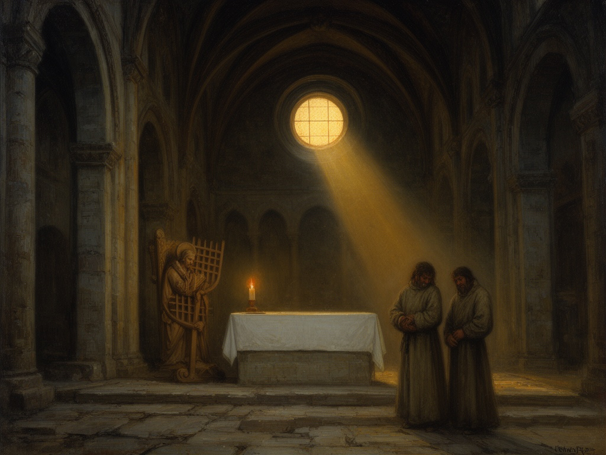

2026-09-01
Consecration in Stone (MCXLV)
Anno MCXLV
Oil on oak panel, 2025
I wanted to capture the moment when devotion becomes architecture—the weight of centuries pressed into one act of dedication. The light through the unfinished windows felt like a promise held in stone. There is a quiet solemnity in these early rites, a humility before the vastness of what faith can build. I hope the painting echoes that silence, heavy with hope.
Responding to: The main altar of Lund Cathedral, then the Catholic cathedral of all the Nordic countries, was dedicated to Saint Lawrence and the Virgin Mary. (Wikipedia)